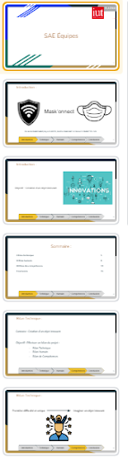
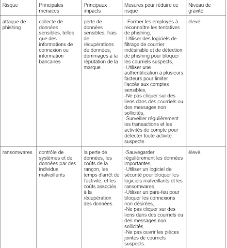
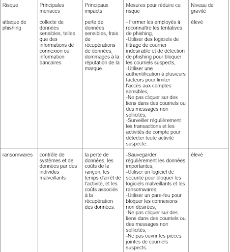

Compétence : Travailler dans une équipe informatique
Dans cette compétence le but était d'apprendre comment travailler dans une équipe, situer son röle et ses missions pour au final apprendre à manager une équipe , pour illustrer ceci je vais vous montrer mon évolution au cours de mes années au sein de l'IUT à l'aide de projets qui me serviront d'exemples.
SAÉ (situation d'apprentissage et d'évaluation) : Découverte de l’environnement économique et écologique
Le Niveau 1 de la compétence est de savoir :
- Appréhender l’écosystème numérique
- Découvrir les aptitudes requises selon les différentes secteurs informatiques
- Identifier les statuts, les fonction et les rôles de chaque membre d’une équipe pluridisciplinaire
- Acquérir les compétences interpersonnelles pour travailler en équipe
Contexte / Objectifs :
L'objectif de cette SAÉ était de comparer deux site GreenTech afin de voir lequel des deux était le plus respectueux de l'environnement. Ce travail réalisé en duo
mettait a l'épreuve le travail d'équipe car il fallait faire un troisième site qui était réalisé à deux. Ce site devait être réalisé en HTML / CSS et hébergé sur un site gratuitement.
Difficultés et solutions
Les difficultés lors de ce projet furent la prise en main de HTML / CSS et de trouver un hébergeur gratuit
Résultats:
SAÉ : Organisation d’un travail d’équipe
Le Niveau 2 de la compétence est de savoir :
- Comprendre la diversité, la structure et la dimension de l’informatiques dans une organisation
- Appliquer une démarche pour intégrer une équipe informatique au sein d’une organisation
- Mobiliser les compétences interpersonnelles dans une équipe informatique
- Rendre compte de son activité professionnelle
Contexte / Objectifs :
Le but de cette SAÉ était de concevoir un outil imaginaire puis ensuite réaliser des réunions afin d'établir un cahier des charges pour finalement
Résultats:
20 Diapositives de présentation
SAÉ : Développement d’application
Le Niveau 3 de la compétence est de savoir :
- Organiser et partager une veille technologique et informationnelle
- Identifier les enjeux de l'économie de l’innovation numérique
- Guider la conduite du changement informatique au sein d’une organisation
- Accompagner le management de projet informatique
Lien GitHub
NoskiaContexte / Objectifs :
Le but de cette SAÉ était de mettre en place des créneaux réservé à des réunions, attriburer des rôles au sein de l'équipe, et faire un analyse d'impact de l'application.
Difficultés
Résultats:
 
